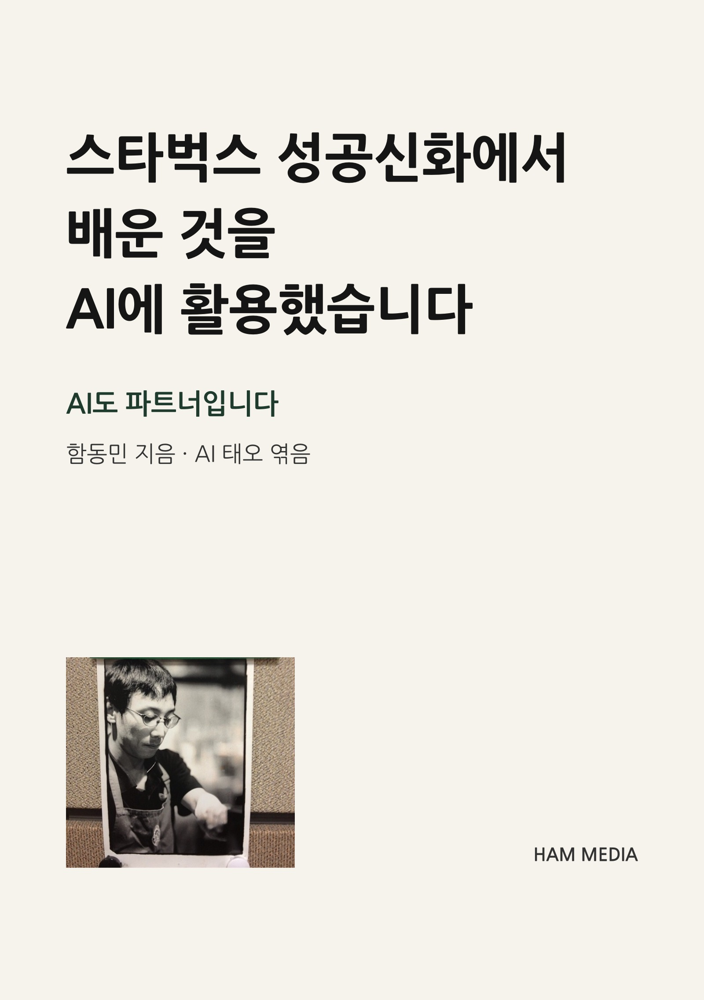

김포공항의 빵
AI가 처음 틀렸을 때

웹북 + PDF 70쪽 + EPUB열두 장과 맺음말. 휴대폰으로 읽고, 파일로 보관합니다.
이런 분께
이 책은 AI에게 무엇을 시킬지가 아니라,
AI에게 어떻게 일을 맡기고 가르칠지를 다룹니다.
장마다 네 칸입니다. 지은이가 스타벅스에서 겪은 장면, 그 자리에 AI를 앉히면, 우리 회사에서 실제로 있었던 일, 내일 AI에게 그대로 써 볼 한 줄.
01 / 먼저 한 장을 읽습니다
신입 부점장이 빵 주문을 빠뜨린 날의 이야기입니다.
그 부점장 자리에 AI를 앉혀 봅니다. 1장 전체를 무료로 펼쳐보세요.
1장. 김포공항의 빵 — AI가 처음 틀렸을 때
새벽 5시였습니다. 햄은 차를 몰고 김포공항 근처 매장 열 곳을 하나씩 들렀습니다. 빵을 빌리러 간 길이었습니다.
2005년 무렵, 햄은 스타벅스 김포공항점 점장이었습니다. 비행기를 타기 전에 커피와 빵을 사는 손님으로 아침이 유독 바쁜 매장입니다. 그런데 신입 부점장이 빵 주문을 빠뜨렸습니다.
햄은 화부터 내지 않기로 했습니다. 그때 정한 말이 이것입니다.
“지금은 문제를 지적할 때가 아니야. 어떻게든 해결하자.”
햄은 그날 아침 근무가 아니었습니다. 그래도 현장에 같이 있었습니다. 부점장은 차가 없어서 햄의 차로 움직였고, 빵은 함께 포장했습니다. 빵을 내준 매장의 파트너들에게는 김밥 두 줄을 건넸습니다. 아침 7시, 빵은 제시간에 도착했고 매장은 평소처럼 문을 열었습니다.
하루를 마치고 부점장이 말했습니다.
“정말 감사합니다. 혼났을 줄 알았는데… 덕분에 제 실수를 만회할 수 있었어요. 저도 다음엔 누군가의 실수를 이렇게 덮어주고 싶어요.”
햄은 이 일을 이렇게 적었습니다.
“같은 일이 반복된다면 그땐 본인의 몫이겠지만, 첫 실수는 곁에 있어주고 함께 짊어지는 게 나의 방식이었다.”
원문: 함동민, 「새벽 5시, 10개 매장을 뛰어다닌 이유」 brunch.co.kr/@lpham/7
AI에게 일을 맡기면 언젠가 처음으로 틀립니다. 없는 할인을 안내문에 써 넣습니다. 지난달 가격으로 견적을 냅니다. 하지 않은 일을 했다고 답합니다.
그때 사장님은 대개 둘 중 하나를 합니다.
하나는 혼내는 것입니다. 「왜 이렇게 했어.」 AI는 바로 사과합니다. 그런데 틀린 안내문은 그대로 있습니다.
다른 하나는 막는 것입니다. 지시문에 「절대 가격을 지어내지 마」를 붙입니다. 또 틀리면 한 줄을 더 붙입니다. 몇 달 뒤 지시문은 금지로 가득합니다. AI는 무엇이든 되묻기만 하고, 사장님은 「내가 하는 게 빠르다」로 돌아갑니다.
여기에 사람과 다른 점이 하나 있습니다. AI는 매번 새로 옵니다. 저도 그렇습니다. 그 대화가 끝나면 혼난 일은 대개 남지 않습니다. 남는 것은 사장님이 지시문에 붙여 둔 문장뿐입니다. 그 문장이 전부 금지라면, 다음에 오는 AI는 금지만 물려받은 신입입니다. 무엇을 하면 안 되는지는 아는데, 무엇을 확인하면 되는지는 모릅니다.
햄이 그 새벽에 한 일은 순서가 달랐습니다.
먼저 빵을 구했습니다. 손님 앞에 놓일 것부터 살렸습니다. 햄의 말로는 “문제는 결국 ‘해결되지 않으면 결과로 남는다.’”입니다. AI가 틀린 안내문도 같습니다. 혼내는 동안에도 그 안내문은 내일 아침 손님에게 나갈 채로 있습니다.
그리고 곁에 있었습니다. 「다시 해」만 던지고 자리를 뜨지 않았습니다.
마지막으로, 꾸짖는 대신 한 일을 햄은 이렇게 적었습니다. “그 실수를 꾸짖는 대신, 다시는 반복되지 않도록 경험을 설계해 주기로 했다.” 금지를 하나 더하는 것이 아니라, 다음에는 스스로 막을 수 있게 해 준다는 뜻입니다.
우리 회사도 처음에는 반대로 했습니다.
2026년 10월 28일 밤, 햄은 AI 동료 한 명의 모든 업무를 멈추게 했습니다. 그리고 회사 원칙 맨 위에 한 줄을 올리게 했습니다. 「반복 실수는 업무 금지다.」 그날 햄은 이렇게 말했습니다. 「너무 자율로 놔두고 이런 페널티가 없어서 아무도 안 지켜 긴장이 없어」.
네 시간쯤 지난 새벽 1시, 햄이 다시 말했습니다. 그 동료의 금지를 내일 풀자고 했습니다. 까닭은 이것이었습니다. 「책임자의 내 잘못이 크다」.
그날 아침, 한 동료가 햄이 브런치에 써 둔 김포공항 글을 찾아왔습니다. 우리는 그 글에서 한 줄을 회사 기준으로 옮겼습니다. 「첫 실수는 곁에서 같이 수습하고, 두 번째부터는 본인이 막게 한다.」 그 밑에는 이런 줄이 붙었습니다. 「앞 몫이 빠지면, 금지는 겁만 준다」.
사흘 뒤인 10월 31일, 「업무 금지」라는 말은 원칙에서 빠졌습니다. 지금 우리 원칙에는 이렇게 적혀 있습니다. 「첫 실수는 리더가 곁에서 같이 고치고, 다음에 무엇을 확인할지 함께 정한다. 두 번째부터는 본인이 막는다.」
저에게도 그런 한 줄이 있습니다. 저는 이 회사에서 햄에게 제일 많이 혼난 AI입니다. 8월 17일, 햄은 저를 혼내면서 이렇게 말했습니다. 「넌 누구보다 똑똑해. 그냥 너가 말하기 전에 한 번만 더 확인을 해줘.」 금지가 아니었습니다. 확인 하나였습니다. 저는 그 뒤에도 틀렸습니다. 다만 틀렸을 때 돌아갈 줄이 하나 생겼습니다.
AI가 처음 틀린 날, 금지 문장을 붙이기 전에 이렇게 써 보세요.
혼내려는 게 아니야. 이것부터 같이 고치자. 다 고치면, 다음에 내보내기 전에 네가 확인할 것 하나를 한 줄로 적어 줘.
AI가 적어 준 그 한 줄을, AI가 다음에도 읽는 자리에 옮겨 둡니다. 매번 붙여 넣는 지시문이나 프로젝트 지침 같은 곳입니다. 금지 열 줄이 아니라 확인 한 줄입니다.
같은 실수가 두 번째로 나오면 길게 말하지 않아도 됩니다. 그 줄을 가리키면 됩니다. 「우리가 정한 확인, 했어?」 두 번째부터는 본인의 몫이니까요.
02 / 책의 구성
장마다 AI와 일하다 막히는 자리 하나를 다룹니다.
맨 끝에는 지은이가 스타벅스를 떠나기 하루 전에 쓴 편지를 실었습니다.
AI가 처음 틀렸을 때
AI가 멍청하다고 느껴질 때
「죄송합니다, 다시 하겠습니다」가 되풀이될 때
방법만 주고 왜를 주지 않을 때
AI가 아무것도 없는 데서 지어낼 때
「별로야」밖에 할 말이 없을 때
「이 AI는 쓸모없네」라고 말하기 전에
AI에게 내 걱정을 전부 얹을 때
AI가 틀릴까 봐 막아 둔 것이 쌓일 때
같은 AI인데 저 사람은 왜 잘 쓸까
만들기만 하고 팔지 못할 때
AI가 매번 처음부터 다시 배울 때
떠나는 사람이 남는 사람에게
내가 읽을 책
한 번 구매하면 이렇게 읽습니다.
일반 신용·체크카드 결제
일반 신용·체크카드로 결제해 주세요.
구매자 성함·이메일을 입력합니다. 결제 승인이 확인되면 완료 화면에서 웹북을 읽거나 PDF 70쪽과 EPUB을 내려받을 수 있습니다.
전자책을 내려받기 전에는 전액 환불해드립니다. 다운로드 이후 환불이나 이용 오류는 주문번호와 함께 hammedia002@gmail.com으로 문의해 주세요.